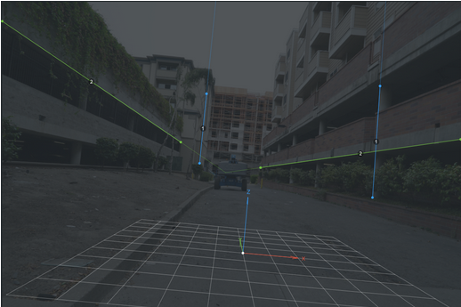
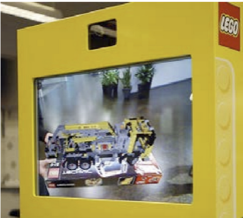

Problem Definition
3D Scene Modeling from Images
Artists want to take an image and create a 3D scene based on that photograph. Artists do not always know the focal length of the camera that took the photo they are using.
They need to know properties of the camera to understand 3D geometry of the scene. This makes it easier to use photos and videos as backgrounds.
Current State of the Art

FSpy is a program that allows a user to define straight lines on an image so that one or two vanishing points can be calculated.
These results, along with field of view, camera position and camera orientation can then be saved and uploaded to Blender to start modeling this scene!

Superimposes 3D animal onto a still image
Vuforia SDK performs computations
Designed to be ran on smartphone in real-time
Our Goal
Given an image, can we estimate the camera properties automatically? Is there a way to skip the line labeling step required by fSpy?
Avoids a tedious, time-consuming process for artists
Requires human attention to detail (potential error)
Method
- Detect edges in the image (Canny Edge Detection)
- Identify lines from those edges (Hough Transform)
- Estimate 2 groups of lines where all the lines in each group are parallel in the world coordinate system
- Use these groups of lines to calculate two vanishing points
- Calculate camera properties from the vanishing points (using the methods from the paper)
- Upload image and camera properties to Blender to begin creating the 3D scene
Next Steps
We hope to develop this into a Blender Add-on. If need be, we will allow user adjustment of vanishing point detection. We will also make the algorithm more robust to different types of scenes. We hope to develop a better estimation for what lines are on what axes.